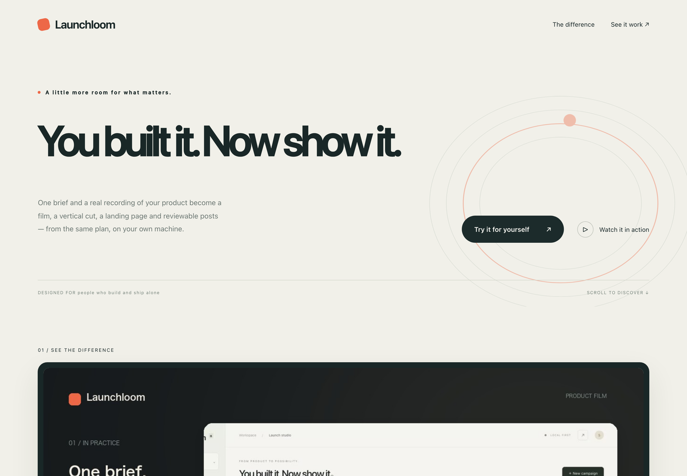
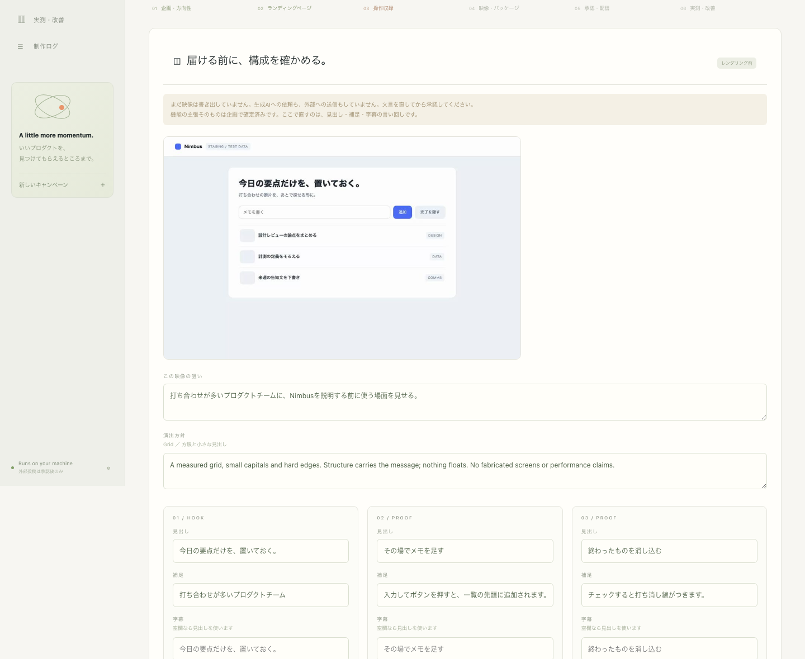

For people who ship alone · runs entirely on your machine
Record the product you built. The same plan gives you a landscape film, a vertical cut, a landing page and social drafts — on your machine, and nothing goes out until you say so.
git clone https://github.com/FORIFOR/Launchloom
cd Launchloom && pip install -e .
python -m launchloom first-proofmacOS / Linux · Python 3.11+ · FFmpeg · about 3 minutes, then the studio opens in your browser · no account, no API key
ACTUAL EVIDENCE
The page and review screen below are actual Launchloom outputs. Product proof is the visual system.

Creation and publishing permission are different steps. Finished videos come back as immutable versions, and the selected version moves into posting preparation.

ONE CAMPAIGN
Not a wall of features: the sequence one real output follows before it can be published.
Capture the real product. Keep approved claims separate from private or unverified information.
Arrange scenes, captions and framing, then export landscape and vertical materials from the same campaign.
Import a finished H.264/AAC MP4 as an immutable version and play the exact file before approval.
Review the selected film and copy, then keep campaign release and each publication approval separate.
PRODUCTION / SHOT LIST
Atmosphere, proof, motion. Decide what each scene needs to communicate before choosing how it gets made.
Execution boundary: configured Seedance 2.5, Codex / Claude Code and aerender runs are explicit opt-in actions. Live paid-provider, licensed AE and real social-account execution remain environment-specific and unverified here.
CAPABILITIES, NOT PROMISES
Implemented behavior, connector code and unimplemented automation are labeled separately. No fabricated customers, logos, reviews or performance numbers.
| Step | Status | Scope |
|---|---|---|
| Recording + local film composition | Implemented | Product capture, captions, landscape and vertical output. |
| Scene plan + production package | Beta | Seedance prompts, agent task, After Effects JSX handoff. |
| Finished film → posting preparation | Implemented | H.264/AAC MP4, up to 200 MB / 5 min, versioned with separate approval. |
| Seedance 2.5 + coding-agent execution | Opt-in implementation | Dedicated fal queue integration and isolated Codex / Claude Code runners. Real paid calls are not exercised by repository tests. |
| After Effects | Guarded execution | Windows JSX runner + cross-platform aerender path; licensed AE operation and visual quality remain unverified. |
| Postiz posting / scheduling | Connector code | Real social-account publishing is unverified and remains approval-gated. |
DRAFTS, NOT LIVE POSTS
Launchloom — turn a real product recording into launch-ready media. https://github.com/FORIFOR/Launchloom?utm_source=x&utm_medium=social&utm_campaign=homepage-drafts-20260916&utm_content=a
A real product recording, shaped into landscape and portrait launch media. https://github.com/FORIFOR/Launchloom?utm_source=bluesky&utm_medium=social&utm_campaign=homepage-drafts-20260916&utm_content=a
Launchloom keeps the real product, final film, landing page and post drafts in one campaign. https://github.com/FORIFOR/Launchloom?utm_source=threads&utm_medium=social&utm_campaign=homepage-drafts-20260916&utm_content=a
For builders who need to show the product, not decorate around it. https://github.com/FORIFOR/Launchloom?utm_source=linkedin&utm_medium=social&utm_campaign=homepage-drafts-20260916&utm_content=a
Launchloom | Real product recording to launch-ready media. https://github.com/FORIFOR/Launchloom?utm_source=youtube&utm_medium=social&utm_campaign=homepage-drafts-20260916&utm_content=a
Real product. Quiet frame. Launch-ready media. https://github.com/FORIFOR/Launchloom?utm_source=instagram&utm_medium=social&utm_campaign=homepage-drafts-20260916&utm_content=a
Launchloom — record the product, shape the film, review before publishing. https://github.com/FORIFOR/Launchloom?utm_source=tiktok&utm_medium=social&utm_campaign=homepage-drafts-20260916&utm_content=a
YOUR MACHINE. YOUR WORKSPACE.
Create a campaign in the studio, shape it on the production board, then bring the finished film back for review and posting preparation.